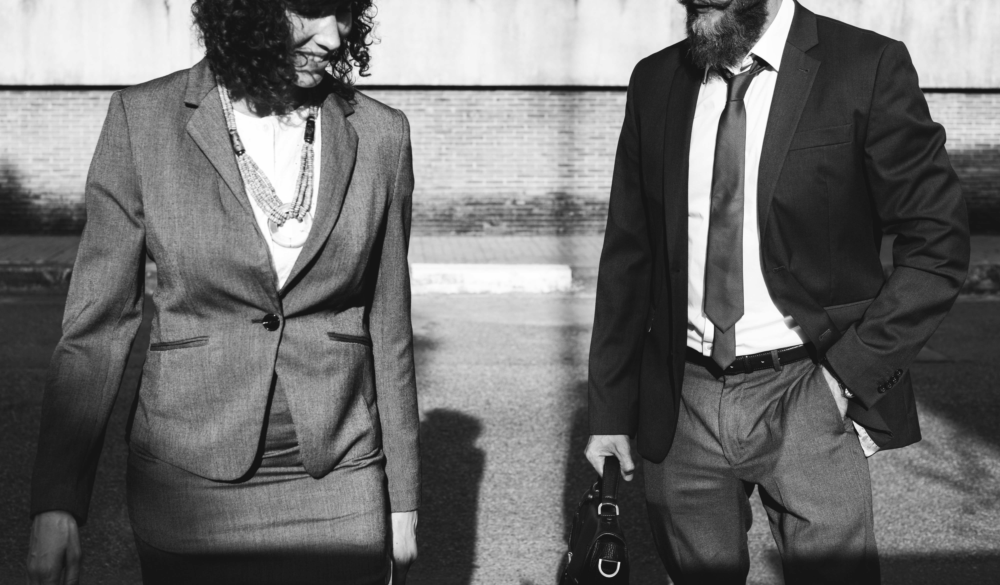

"Suit and tie" redirects here. For the Justin Timberlake song, see Suit & Tie. For other types of suits, see Suit. "Menswear" redirects here. For the musical group, see Menswear (band). Former U.S. President Barack Obama and Turkish President Recep Tayyip Erdoğan wearing Western-style business suits. Narendra Modi, Prime Minister of India, and Vladimir Putin, President of Russia, in business suits In clothing, a suit is a set of garments made from the same cloth, usually consisting of at least a jacket and trousers. Lounge suits (also known as business suits when sober in colour and style), which originated in Britain as country wear, are the most common style of Western suit. Other types of suit still worn today are the dinner suit, part of black tie, which arose as a lounging alternative to dress coats in much the same way as the day lounge suit came to replace frock coats and morning coats; and, rarely worn today, the morning suit. This article discusses the lounge suit (including business suits), elements of informal dress code. (From:Wikipedia)